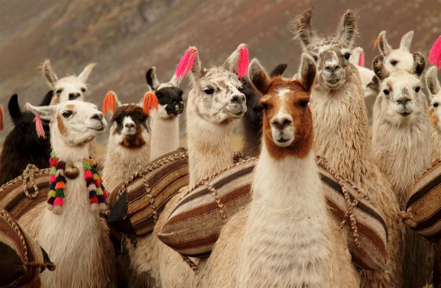

Wamani
Turismo
Excursiones y travesías en Jujuy
💬 Escribinos por WhatsApp
Excursiones de un día
Cascada Santuyoc y Angosto de Jaire
Día completo
→
Termas de Jordán
Día completo
→
Atardecer en las Salinas
Día completo
→
Lagunas de Yala y Termas de Reyes
Día completo
→
Recorriendo la Quebrada
Día completo
→
Varios días
Conociendo las Yungas
3 días y 2 noches
→
Yungas Express
2 días y 1 noche
→
Travesías
Tilcara – Calilegua
Abril a noviembre
→
Humahuaca – Las Yungas
Abril a noviembre
→
Iruya – Nazareno
Abril a noviembre · Salta
→
✦ Wamani Selecta
Especial Finca La Fé
Línea premium
→
Especial The Canuto Glamping
Línea premium
→
Especial Ecolodge de la Selva
Línea premium
→
¿Ninguna te cierra?
Jujuy
a medida
Recorré la provincia a tu manera
Más de Wamani
Nuestra web
Blog
Agencias
Instagram
Facebook
wamaniturismo.com · San Salvador de Jujuy, Argentina